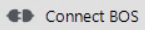
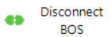
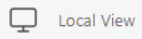
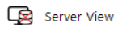
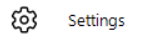

BOS status information
Status | Display |
|---|---|
Connect BOS - BOS not connected |  |
Connect BOS - BOS connected |  |
Disconnect BOS - BOS connected | |
Local View - BOS connected | |
Local View - BOS not connected |  |
Server View - BOS connected | |
Server View - BOS not connected |  |
Settings |  |
Status symbols in the project manager
Status symbols in the project tree and data pane provide information on the current situation of projects and elements and associated actions.
- Not checked in (local view): No symbol
- Checked in Server View: No symbol.
- Checked out to active PC, both views:
- Checked out, both views: